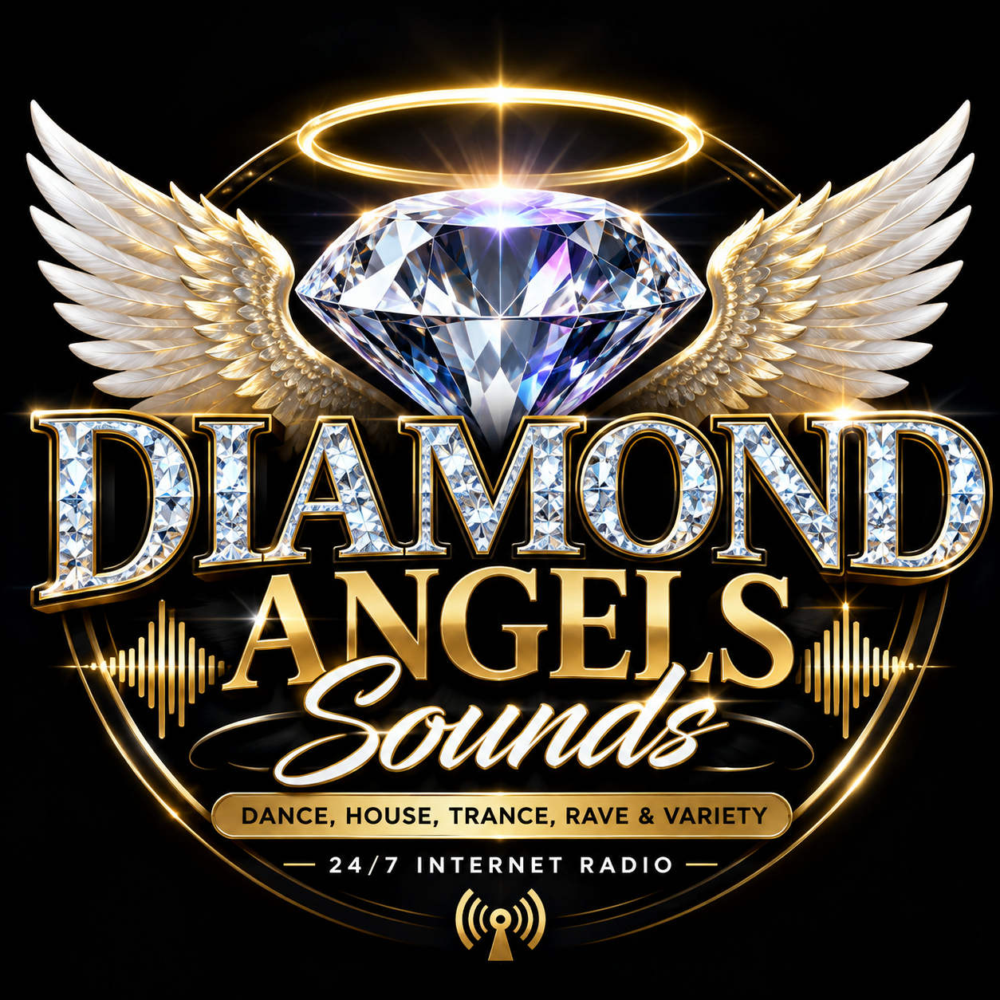

☀️
BREAKFASTNick Whiley aka DJFlames
07:00–11:00Music, conversation, local community talk and energy to start the day.

KING'S LYNN · WEST NORFOLK
Dance · House · Trance · Rave · Classics · Independent Music
Independent radio with live presenters, community voices and non-stop music around the clock.
▶ Listen LiveON AIR
If the player does not start, open the YesStreaming live player.
PROGRAMMES
Music, conversation, local community talk and energy to start the day.
Dance, house, trance, rave, classics and independent releases.
A platform for local stories, artists, events and community conversation.